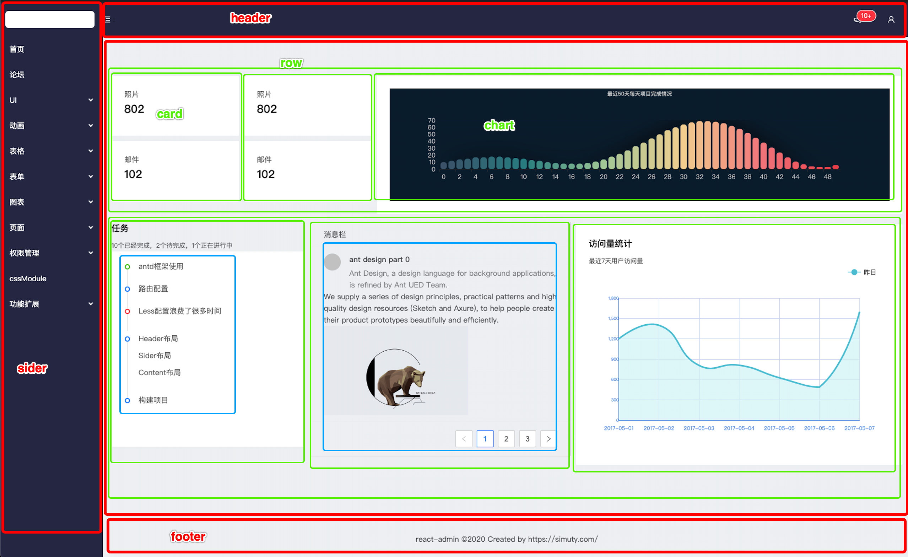
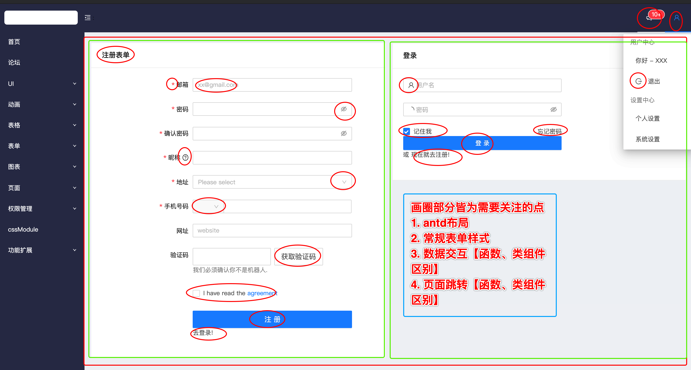

民之从事，常于几成而败之。慎终如始，则无败事。— 《道德经》第64章
原本打算做的网易音乐后台要搁浅了
首先我觉得这个并不适合我
原因有以下几个方面：
- 跳跃过大
- 自定义模块过多
虽说跟着一遍做一遍摸索，可以完成，但我觉得太浪费时间，终究没有个流程。
我的目标是：
- 掌握数据流管理方案–redux及其配套设施；
- 熟悉react、react-router-dom、react-router的应用场景以及注意事项；
- 熟练使用antd的组件；
- —-完成前端应用—–
- Eggjs + Mysql 提供数据服务
- 进一步完善前后端
开篇
以上的目标打算抽时间逐步完成，这个系列博客，尽量写明白写清楚，也算是职业生涯中的值得回忆的一个成就。
因为是一边学习一边记录，所以采取由浅入深的开发流程。
说明
为了完成目标，确定的目标项目是开源的—-react-admin；打算在此基础上进行改写并完成一个相对完善的后端项目。
这篇文章说明的文字较多。
原生化
- 尽可能的只用原生组件，目光始终在完成需求上；
- 尽可能用不同的方式完成同样的需求；
- 尽可能好的组织代码方式
技术栈
大致分为以下几类，还会涉及其余的相关模块等，后续会在相关位置添加链接或单独写文章整理。
- 语言：
- React：
- 状态管理：
- UI：
疑问解答
采用官方脚手架–create-react-app；
为何不用dvajs?
综合性很强，但我认为应该先难后易
为何不用umi?
综合性更强，仍旧认为应该先难后易
学习node，我觉得先了解express，再写koa，最后采用egg 是个不错的选择。
建议不要eject!
初心是学习react全家桶，不是webpack【后期有空再学】, 至于less相关配置，可以换个做法
开动
由于打算写这个系列的文章的时候，基本的UI框架已经搭建好，现在就把文件目录罗列出来，并加以说明，针对这个过程中遇到的问题，会在之后一一罗列，代码中几乎都会有注释。
1 | . |
步骤一 初始化
1 | # --- 初始化 |
以上构建好&启动了项目。
步骤二 下载相关依赖
其实应该用到啥配置啥，这样更能明白，但是现在只能罗列下，建文件夹、下载、、、都太简单了.
换个思路，把目前需要的包罗列出来，然后逐步完善代码。
1 | // 默认生成的文件 |
目前为止，配置文件内容
1 | { |
总结，这部分主要添加一些所需模块，没啥东西。
⚠️注意事项
疑问1🤔️： 如何按需加载antd组件？
- babel-plugin-import：
- 目标：按需引用antd
- 如何做：antd说明–搜：babel-plugin-import
疑问2🤔️：如何加载less文件？？
- react-app-rewired
- 目标：自定义启动服务
- 如何做：antd说明–搜react-app-rewired
针对这两个问题，由于只是配置，仔细看下antd说明完全可以搞定。
本来写了个demo，感觉太简单了，没必要。。。
步骤三 自定义布局
这个部分主要采用antd的布局方式
常规布局，sider、header、 content、footer
侧边栏布局效果如下

步骤四 表单页面

之后单文件的注意事项会在代码首部写明，便于之后复习。
因为表单页面场景比较多，结合注册登录页面将常规使用、触发，模拟触发交互数据的动作，过程中主要遇到的问题
⚠️注意事项
函数组件路由如何跳转?
- 路由跳转的几种方式：
- 路由组件
- this.props.history.push()
- 非路由组件 ✍️
- useHistory: react-router-dom中的hook–useHistory(): 可以获取到history
- withRouter: 添加withRouter，参数中包含props
- 路由组件
- 路由跳转的几种方式：
函数组件中form如何在antion中获取到/验证 form value?
- ✍️ 利用Form.useForm()，可以获取到form, 进一步获取到form.validateFields()、form.getFieldValue(‘phone’)
- 验证方法
- 点击实例代码看控制台
- 看代码中的注释
代码链接
这篇文章跨度有点大，但是并不涉及数据流相关操作，故不懂的就看代码吧，里边有注释，其中还有些布局问题，先解决大问题，具体细节之后再修仔补。
之后的章节都会以不同的分支作为与文章对应的代码。
代码
仓库： git@github.com:simuty/react-project.git
分支： origin/chapter1/step2